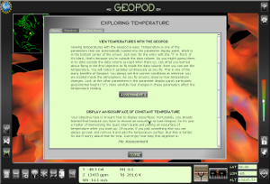
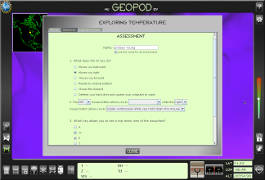

Welcome to the Geopod Mission System. The Geopod Mission Builder allows you to create challenging, innovative missions to help your students learn exciting meteorological concepts. Geopod missions utilize the built-in mission feature in the Geopod plugin to bring assignments to students right in their exploration environment, enhancing the learning experience. The Mission System makes Geopod an exceptional classroom tool because mission instructions and assessments are conveniently available for your students right inside Geopod.
What is a mission?
A
combination lab assignment and quiz that is specially designed to
be used with Geopod, a mission consists of background material and
specific assignment objectives, each with an assessment to evaluate
student performance. Missions can be created using the online
Mission Builder and then exported as .geo files which can be
distributed to students, for example, sent via email, posted on a
website, or placed in a shared folder. Students can load the .geo
file into Geopod to view the mission and take assessments.
How does a mission appear
inside Geopod?
After students load a .geo mission
file into Geopod, they will see two new tabs in Geopod’s Mission
Panel: Mission and Objectives. The Mission tab will contain the
mission’s background material,  which
can include images and links as well as text. The Objectives tab will contain a list
of the mission objectives; each objective is shown with a title,
plain text description, and link to its assessment. Assessments for
each objective can consist of multiple choice questions
(both single answer and multiple answer) and multi-dropdown
questions (like fill-in-the-blank, but each blank is a dropdown
where an answer can be selected). Assessments are not timed, and
students can view an assessment, return to the objectives list, and
view other assessments with no penalty. Once an assessment is
submitted, however, it cannot be retaken unless the mission is
reloaded.
How are assessments taken
and scored?
When a mission is created, each potential
answer to an assessment question is given a point value and marked
as correct or not. The total point value for the question is the
sum of the point values for all correct answers. This allows
students to receive partial credit for some answers, even if they
are not correct, or lose points for other answers. Unanswered
questions are given a score of 0.
When a student completes an assessment and clicks submit, Geopod calculates and reports the points earned out of the total number of points possible. Geopod does not reveal scores for individual questions or indicate which answers were correct, but instead generates an encrypted file (also with a .geo extension) with the student’s answers and places it on their desktop. Students can then submit their answers files to the instructor, for example, by emailing them or placing them in a folder in a shared location. Using the Geopod Mission Grader application (available for download soon), instructors can load the .geo files to see individual answers and overall scores for their students.
How do I use the Mission
System website?
To access the missions already written by
other instructors or use the Mission
Builder to create your own, you will need to register for an
instructor-level account using the link in the login area on the
left. When you register, you will need to provide additional
information to verify that you are an instructor and wait for
approval before being able to log in. If you want to try out the
Mission Builder without viewing missions created by other
instructors, you can create a student account for immediate access.
Please Note: This mission site is currently under
construction. No instructor accounts are accepted at this time.
Please feel free to experiment with a student account, but any
missions you create may be deleted.